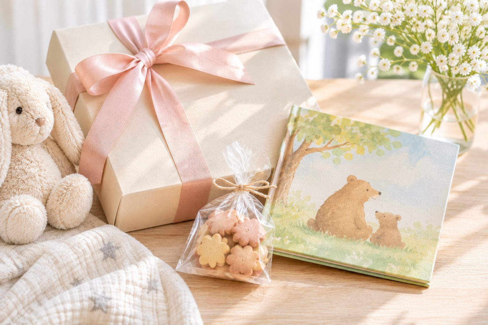
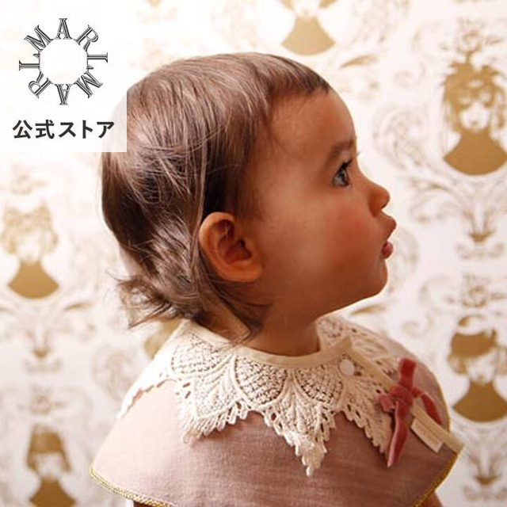
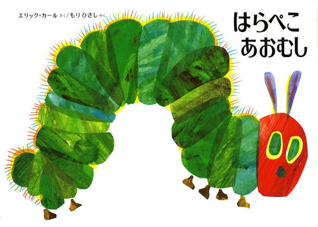

2人目のお祝いは、「贈る前の確認」でほぼ決まる
1人目の出産祝いと2人目で決定的に違うのは、相手の家に「1人目の在庫とお下がり」があることです。そのため2人目では、品物選びそのものより、贈る前に何を確認したかで結果が分かれます。

出産祝いを受け取った女性400名を対象にした調査（リンベル調べ）で、「もらって困った理由」の上位は次のとおりでした。
- 趣味に合わないもの：34.5%
- すでにたくさん持っているもの：29.0%
- サイズが合わないもの：28.0%
- 他の人からのお祝いと重複したもの：26.3%
- 使用時期・シーンが限定的なもの：21.3%
上位5つのうち4つは、贈る前にひとこと確認していれば避けられた理由です。実際、1人目と2人目以降で「もらって嬉しかったもの」を比べると、ベビー服は36.8%から26.3%へ下落し、ベビーカーなどの育児用品とおもちゃ・絵本はランク外になりました。逆に、商品券・ギフトカード（30.0%→35.8%）と消耗品（33.0%→35.3%）は上昇しています。「定番をそのまま贈る」ことが、そのまま失敗の型になっているのです。
とはいえ、本人に聞いても「何でも嬉しい」としか返ってこない、という声も贈る側から繰り返し見られました。この記事では、相手が答えやすい形で確認する手順を、項目ごとにまとめます。品目ごとの評価や順位づけは、調査を集計した総合記事「二人目の出産祝いは何が正解？」に譲り、ここでは「確認のしかた」に絞ります。
→ 品目選びから入りたい方はこちら：二人目の出産祝いは何が正解？ もらった側の本音調査まとめ
確認の聞き方：3つのコツ
いきなり「何が欲しい？」と聞く必要はありません。ハッピー・ノートの2人目向け調査では、贈り方として「欲しいものを聞く」が約42.3%で最多でした。聞くこと自体は、すでに多数派の作法です。答えを引き出しやすい聞き方は次の3つです。
- ジャンルだけ聞く：「消耗品と食べ物、どっちがありがたい？」のように二択にすると、相手は答えやすく、サプライズの余地も残ります。
- 使っているものを聞く：「何が欲しい？」ではなく「おむつ、何を使っている？」。銘柄・サイズ・行きつけの店といった事実の質問は、遠慮がちな相手でも答えられます。
- 避けたいものだけ聞く：「困るものがあれば先に教えて」。好みを全部聞き出さなくても、地雷だけは回避できます。
確認1：すでに持っているもの（大型用品・おもちゃ）
最初に確認したいのは「その家に、もうあるかどうか」です。ベビーカーやバウンサーなどの大型育児用品は、リンベル調査で1人目の「嬉しかった」上位（35.0%）から2人目ではランク外へ落ちました。X上の受け取り体験の集計でも、大型品は肯定の具体投稿がなく、困った側に複数件が集まっています。理由は「すでに持っている」と「置き場所」の2つです。
定番のおもちゃや大きなぬいぐるみも同じ構造で、「何個目か」が評価を決めます。大型品と定番おもちゃは、「持っていない」ことがはっきり確認できる相手にだけ贈るもの、と線を引いてください。連名で高額品を贈る場合も、候補を決める前に持っているかどうかを一言確認するのが先です。
確認2：服のサイズ・季節・性別
ベビー服は、調査によって「嬉しかった1位」と「困った1位」が入れ替わる、最も両極端なカテゴリです（ウェブライダー調査）。2人目ではお下がりで足りる分、嬉しかった割合は36.8%から26.3%へ下がっています。
贈るなら、確認すべきは次の3点です。
- サイズ：新生児サイズは着られる期間が短く、困った側の理由でも「サイズが合わない」が28.0%を占めます。目安は80cm以上、先のサイズです。
- 季節：生まれる季節ではなく「そのサイズを着る季節」で選びます。サイズと季節がずれると、着ないままサイズアウトします。
- 性別：2人目が1人目と異性の場合は、お下がりで揃わない「新しい性別の服」が有効な選択肢になります。逆に性別が分からないうちは、服ではなく性別に依存しない品に寄せてください。色はベージュ等のシンプル系が無難です。
希望サイズを聞くときは、「夏に着る服を贈りたいけれど、欲しいサイズはある？」のように、贈る側の想定を先に示すと答えが返りやすくなります。
確認3：消耗品の銘柄・サイズ・タイプ
消耗品は2人目で評価が上がるカテゴリですが、品目によって「確認の要否」が正反対です。
紙おむつは、確認がすべてです。育児中のママ・パパ100人の調査（へその緒屋）では「もらって嬉しかった」1位（5人に1人）でしたが、Xの集計では評価がはっきり分かれました。「何を使っているか聞いてくれた」うえで箱でもらったことが「拝むレベルでありがたかった」と語られる一方、新生児サイズはすぐサイズアウトして余り、すでにMサイズの子にSサイズが届いた失敗例もあります。確認する項目は4つ——メーカー・商品名・サイズ・テープタイプかパンツタイプか。なお、おむつのサイズは体重が目安ですが、メーカー公式（パンパース）でも、体型やフィット感をあわせて確認するよう案内されています。[1]
おむつケーキにする場合も、形より中身です。一枚ずつ輪ゴムで固定された巨大なものは「解体が面倒」「場所を取る」と不評で、困ったものの調査でも上位に入っています（GIFTFUL調査で3位・14%）。中身の銘柄が選べるタイプかどうかを確認してください。
おしりふきは、確認できないときの受け皿です。銘柄へのこだわりが比較的緩く、当サイトが集計したXの受け取り体験では、消耗品の中で唯一、困った側の具体投稿がゼロでした（嬉しい7件／困った0件）。聞けない間柄では、おむつではなく厚手のおしりふきを量で贈るのが安全な分岐です。肌に合わない場合に備え、無添加・低刺激系が無難です。


→ 銘柄・サイズの聞き方まで含めた消耗品の詳しい選び方はこちら：出産祝いの消耗品は「おしりふき」と「おむつ」の2択
確認4：食べ物の苦手・保存場所
食事系ギフトは、Xの集計で嬉しい9件／困った0件と、2人目で評価の安定したカテゴリです。ただし食品には、他の品目にない確認点が2つあります。
- 保存場所：冷凍品は冷凍庫の空きが前提です。空きが読めない相手、里帰り中で受け取りの時期が読めない相手には、常温保存できるフリーズドライが向きます。
- 苦手・アレルギー・授乳中の食材：外からは分かりません。聞ける間柄では出産報告への返信のついでに一言確認を。なお、通常のコーヒーとアルコールは、産後・授乳期に「飲めなかった」という困り例が確認されているため、確認なしでは避けてください。
代表例として名前が繰り返し挙がったのは、Soup Stock Tokyoの冷凍スープです。「困ったらこれを送っておくれ」と、受け取った側が他人に推薦する文脈で語られていました。

→ 冷凍と常温の使い分け、予算別の型はこちら：二人目の出産祝いに食事ギフトが外さない理由
確認5：「選べる系」は、使う店と有効期限
ギフトカード・商品券は2人目で評価が最も伸びたカテゴリです（リンベル調査で30.0%→35.8%）。ただし「選べる」ことが強みになるのは、相手が実際に使える店のカードである場合だけです。近くに店舗がないベビー用品店のカードは、選べるようで選べません。相手が使う店、利用条件、有効期限を確認してから選んでください。金額がそのまま伝わるため、メッセージカードを添えるのが定番の配慮です。目上・年上の親戚には「味気ない」と受け取られることがあるため、その場合は品物かカタログギフトが無難です。
カタログギフトは、GIFTFULの調査（ママ100人）で嬉しかったものの4位（24%）で、理由は「自分で選べる」「失敗がない」でした。選ぶときの確認点は、ベビー用品が含まれる育児向けカタログかどうかと、有効期限が6か月以上あるかどうか。産後すぐは選ぶ余裕がないため、期限の短いものは避けてください。
確認6：名入れするかどうか
名入れは、2人目ならではの諸刃です。お下がりだらけの環境で、名前の入った実用品は「この子だけの物」になります。Xの集計では名入れへの言及がほぼ肯定で、MARLMARLの名入れスタイは「色々頂いた中で1番嬉しかった」という声が複数ありました。
- 例：MARLMARL スタイ「dolce」（名入れ刺しゅう対応）4,180円（2026年11月14日時点・楽天市場 MARLMARL公式店）
一方で、服への名入れは「サイズアウトしても売れない」という否定意見が大きく出ています。よだれの出ない子では、名入れスタイが「ほぼ使わず、手放すこともできない」例もありました。判断軸はシンプルで、名入れはスタイ・タオル・マグなど“毎日使う小物”に限ること。相手が譲る・売る習慣のある家庭かどうかも、名入れ前に確認したい点です。

確認7：上の子の年齢と好み
2人目の出産祝いで、本体と同じくらい満足度を左右するのが上の子への配慮です。ハッピー・ノートの調査では、2人目への贈り方として「上の子にも何かあげる」が約31.6%でした。受け取り側でも、上の子向けの絵本や服が同梱されていたことに感動したという声が見られます。
確認するのは、上の子の年齢・性別・今好きなもの。分量の目安は、本体に添える1,000〜3,000円のプチギフト（絵本、お菓子、文房具、お揃いの小物）で、本体より目立たせないことが前提です。本人に欲しいものを聞いた家庭では「1人目のサイズの服（お下がりで下の子にも着せるから）」という合理的な答えが返ってきた例もあり、上の子への服は実質的に2人目への贈り物にもなります。
絵本を添える場合は、定番の重複に注意してください。各家庭に揃いやすい有名タイトルより、少しひねった選書が安全です。音の出るタイプには「刺激が強い」という困り例があるため、静かな本が無難です。

確認8：予算と、相手の返礼の負担
予算は「いくらが正解か」ではなく「関係性と返礼の負担」で決めます。各社の金額相場表の共通レンジは次のとおりです。
| 相手 | 相場の目安 |
|---|---|
| 友人・知人 | 3,000〜10,000円 |
| 同僚（個人） | 3,000〜5,000円 |
| 上司・先輩 | 5,000〜10,000円 |
| きょうだい・親戚 | 10,000〜30,000円 |
注意点は2つ。ひとつは、贈りすぎも相手の負担になることです。HugKumの調査（1,000人）では「プレゼントの内容に関わらず困る（お返しをしないといけない・気を遣う）」が5.3%あり、内祝いは半返し〜3分の1が目安とされるため、高額な品ほど相手の負担が増えます。もうひとつは逆方向で、2人目だからと1人目より金額を減らすと、かえって気まずくなるという指摘があることです。額を下げるのではなく、金額が伝わりにくい品物やカタログギフトで「見え方」を調整するのが整理のしかたです。
→ 予算帯ごとの組み立て方はこちら：二人目の出産祝い 予算別ガイド
確認9：渡すタイミングと方法
最後の確認は「いつ・どうやって」です。一般的な目安は生後7日〜1か月。退院直後の訪問は避け、産後2〜3週間頃に連絡してから贈るのがよいとされます（リンベル）。「早く贈らなければ失礼」という焦り自体が悩みになっているという声もありましたが、目安の範囲内で相手の回復を優先して問題ありません。
遠方の相手には、配送日時を指定できる通販ギフトが前提になります。住所を聞くこと自体を負担に感じる場合は、デジタルギフトという選択肢もあります。リンベル調査ではデジタルギフトの受け取り経験者は52.3%、肯定派は約78%と、住所不要で贈れる手段は広がっています。里帰り中の家庭では、届け先が自宅か里帰り先かも先に確認してください（冷凍品は特に重要です）。
聞けないときは、確認なしで選べるものへ
関係性や状況によっては、確認そのものが難しいこともあります。その場合の安全圏は、調査で「困った」が確認されなかった次の3つです。
- おしりふき（厚手・量で）：銘柄の確認なしで贈れる、唯一の消耗品（確認3）
- ギフトカード・商品券：相手が使う店が分かっている場合に限り、確認なしで成立します（確認5）
- ママ本人へのギフト：赤ちゃん用品が揃った家庭の受け皿。リンベル調査で「ママをねぎらうアイテム」は1人目24.3%（7位）から2人目23.3%（5位）へ順位を上げました。入浴剤・スキンケア・デカフェ・スイーツなど、日持ちして香りの控えめなものを
逆に、確認なしでは避けるべきなのは、大型用品、銘柄の決まったおむつ単体、新生児サイズの服、授乳を前提にしたママ用品一式（本人の状況と合わず困った側に入った、ママ向けでは目立つ失敗例です）です。
送る前の最終チェックリスト
購入ボタンを押す前に、この11項目だけ確認してください。
- その品は、相手の家にすでにあるものではないか（確認1）
- 服なら、サイズは80cm以上で、「着る季節」と合っているか（確認2）
- 性別が分からないのに、性別で分かれる品を選んでいないか（確認2）
- おむつなら、メーカー・商品名・サイズ・タイプを聞いたか（確認3）
- おむつケーキは、中身の銘柄が選べるタイプか（確認3）
- 食品なら、保存場所（冷凍庫の空き）と苦手・アレルギーを確認したか（確認4）
- ギフトカードは、相手が使う店のものか。有効期限は確認したか（確認5）
- 名入れは「毎日使う小物」にだけ入れたか（確認6）
- 上の子への小さな同梱（1,000〜3,000円）を用意したか（確認7）
- 金額は関係性の相場の範囲で、相手の返礼負担が重すぎないか（確認8）
- 届け先（自宅／里帰り先）と配送日時は合っているか（確認9）
よくある質問
希望を聞くと、サプライズになりませんか？
品物を決める前に、欲しいジャンルや避けたいものだけ聞く方法があります。ハッピー・ノートの調査では「欲しいものを聞く」が2人目の贈り方の約42.3%で最多でした。全部を聞くのではなく「確認1〜9のうち、その品に必要な項目だけ」を聞けば、サプライズの余地は残ります。
希望が分からない場合は？
大きいものや肌に使うものを、こちらだけで決めないでください。本人が使う店のギフトカード、カタログギフト、おしりふきなど、確認なしで成立する安全圏（本文の「聞けないときは」節）から選ぶのが無難です。利用条件と期限は購入前に確認してください。
聞くのは失礼ではありませんか？
受け取り側の調査では、確認不足が「困った」理由の上位を占めています（趣味に合わない34.5%、すでに持っている29.0%、サイズが合わない28.0%＝リンベル調査）。逆に、おむつについて「何を使っているか聞いてくれた」ことが「拝むレベルでありがたかった」と語られた例もありました。聞き方を事実の確認（使っているもの・サイズ・使う店）に寄せれば、失礼にはなりにくい、というのが調査と声から見える構図です。
ママの本音コメント
※以下の声は、本文で紹介した公開アンケート・X上の受け取り体験から、印象に残った言葉をそのまま抜き出したものです。特定の個人への取材ではありません。
受け取り側の声：聞いてくれたことが嬉しい
「拝むレベルでありがたかった」
（確認3の節より。おむつの銘柄を「何を使っているか聞いてくれた」うえで箱でもらったときの声）
贈り側の声：聞いても「何でも嬉しい」
「何でも嬉しい」としか返ってこない
（導入の節より。本人に聞いてもこの返事しか返ってこない、という贈る側の声）
受け取り側の声：冷凍スープを人にも勧めたい
「困ったらこれを送っておくれ」
（確認4の節より。Soup Stock Tokyoの冷凍スープへの声）
受け取り側の声：名入れスタイが一番嬉しかった
「色々頂いた中で1番嬉しかった」
（確認6の節より。MARLMARLの名入れスタイへの声が複数ありました）
まとめ
- 2人目のお祝いで困られる理由の上位は、確認不足で説明できるものばかりです。贈る前のひとことが、最も確実な外し回避策になります。
- 確認の軸は9つ：持っているもの／服のサイズ・季節・性別／消耗品の銘柄とサイズ／食べ物の苦手と保存場所／選べる系の利用条件／名入れの可否／上の子の年齢と好み／予算と返礼負担／渡すタイミングと方法。
- 聞き方のコツは、「何が欲しい？」ではなく「何を使っている？」。事実を聞く質問は、遠慮し合う2人目の構図でも答えが返ってきます。
- 聞けないときは、おしりふき・ギフトカード（使う店が分かる場合）・ママ本人へのギフトが安全圏です。
※この記事にはアフィリエイト広告（PR）が含まれます。記事内のリンクからご購入いただくと、当サイトに紹介料が支払われる場合があります。